OBJECTION
Adaptable, highly motivated, hardworking and solutions-oriented student with a great passion for languages and linguistics is ready to continually improve personal and professional skills and knowledge.
EXPERIENCE
President of a Student Club
NU Languages, Linguistics and Literature Club
May 2021-Present
- Organized Lecture series with Professors and Students
- Promote the linguistics and world languages through social media (Instagram and Telegram)
- Organized the 3rd NU Linguistics Olympiad to promote the linguistics awareness and diversity among university students
- Organized Literature week to promote the literature among university students. Kahoot games, Professor Talks, Book Launch, Book Presentation, Spelling Bee contests were organized during this week.
- Organized an event regarding Corpus Linguistics, which is called LLL-Ed: Corpus Linguistics (11.04.2023), to promote the awareness of people about this particular branch of Linguistics.
- Organized Culture Day (14.10.2022) to promote the diverse of cultures at NU
- Organized Humanities and Social Sciences Day (13.04.2023) to promote and increase the awareness about the humanities and social sciences at NU
- Organized WLLC Pizza Party event (22.04.2023) to develop the networking between WLLC major students and LLL department professors
- Organized the Welcome Party for guests from Carleton College (13.04.2023), which consisted of breakfast together, pizza party, NU campus and Astana city tours
- Responsible for emails
Vice-President of a Student Club
NU Languages, Linguistics and Literature Club
March 2021-May 2022
- Organized Lecture series with Professors and Alumni
- Promote the linguistics and world languages through social media (Instagram and Telegram)
- Organized Linguistics Olympiad to promote the linguistics awareness and diversity among university students
- Organized Literature week to promote the literature among university students
- Organized an event about Turkish language and linguistics
- Responsible for emails
- Responsible for technical issues (Zoom platform, social media)
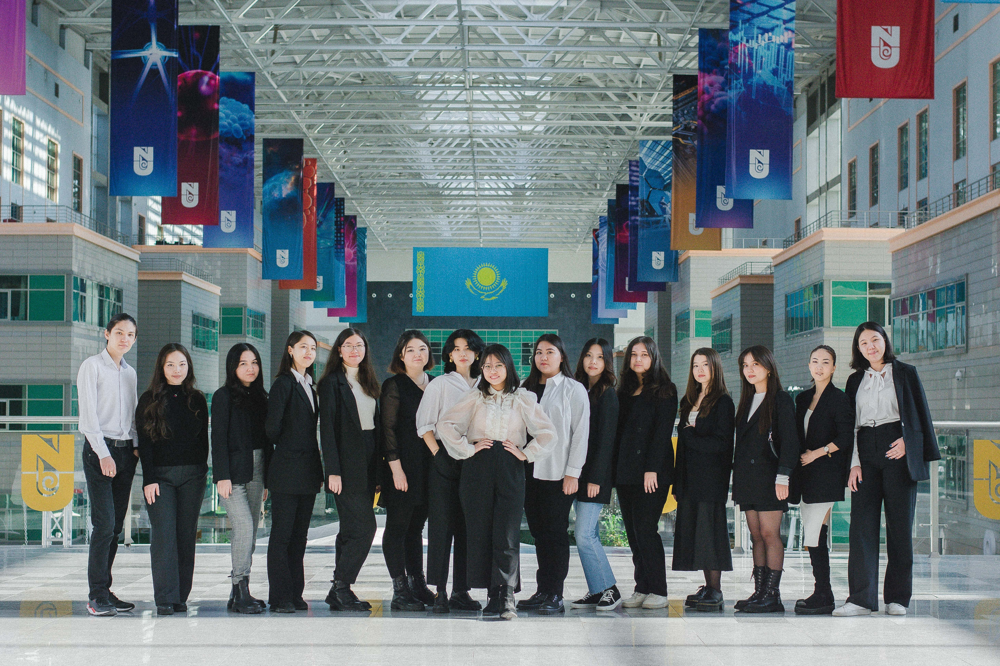


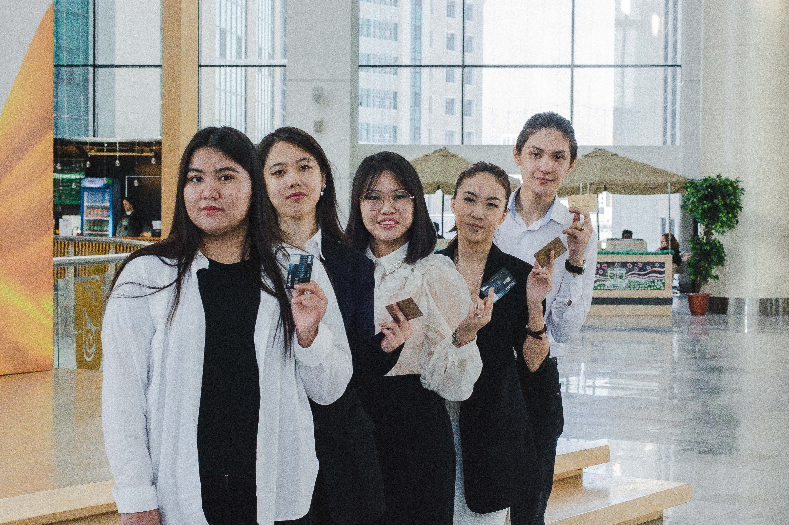
Intern
Summer program of assisting teachers of Kazakh language for Foreigners
June 2021-July 2021
- Promoted Kazakh language and culture through Instagram by posts and stories about Kazakhstan cities and customs
- Tutored students 4 hours per week to develop their language skills
- Planned and organized Kazakh language classes
University Club Fair Day Representative
NU Club Fair Organizing Team
August 2022
- Was one of the organizers of university-wide club fair
- Maintained the communication between organizing team and the student clubs' representatives
- Was responsible for technical and furniture support during the event


Linguistics Olympiad Organizer
The Third NU Linguistics Olympiad
August 2022 - November 2022
- Designed 2 Olympiad problems
- Collected 3 other Olympiad problems
- Designed the Olympiad problems paper and answer sheets
- Printed the Olympiad papers
- Maintained the prizes from Student Fund Budget Committee and LLL Department
Research Assistant
Attitudes of Kazakhstani people towards Latinization Reform
September 2021-Present
- Created and translated online questionnaire
- Collected questionnaire answers
- Created map of participants' origin
Photographer
NU Image
August 2019 - Present
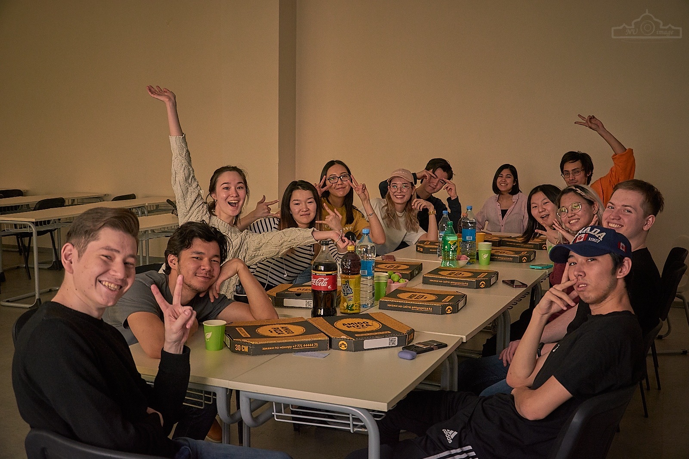
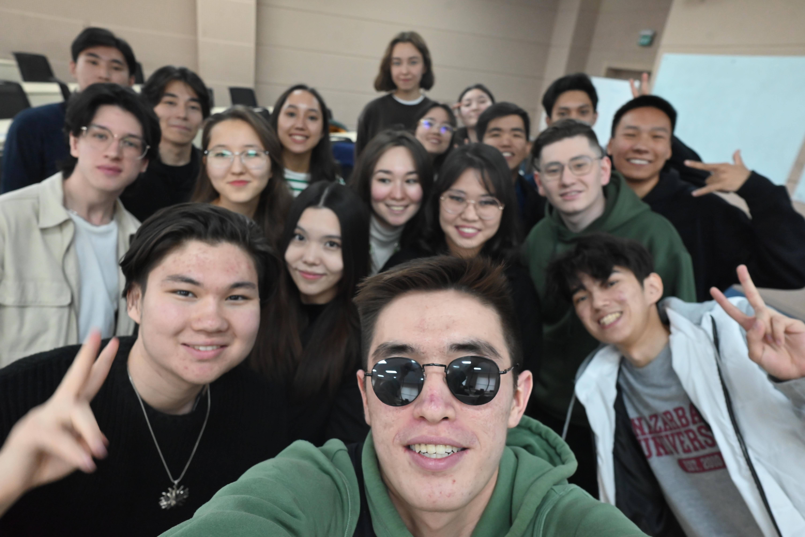
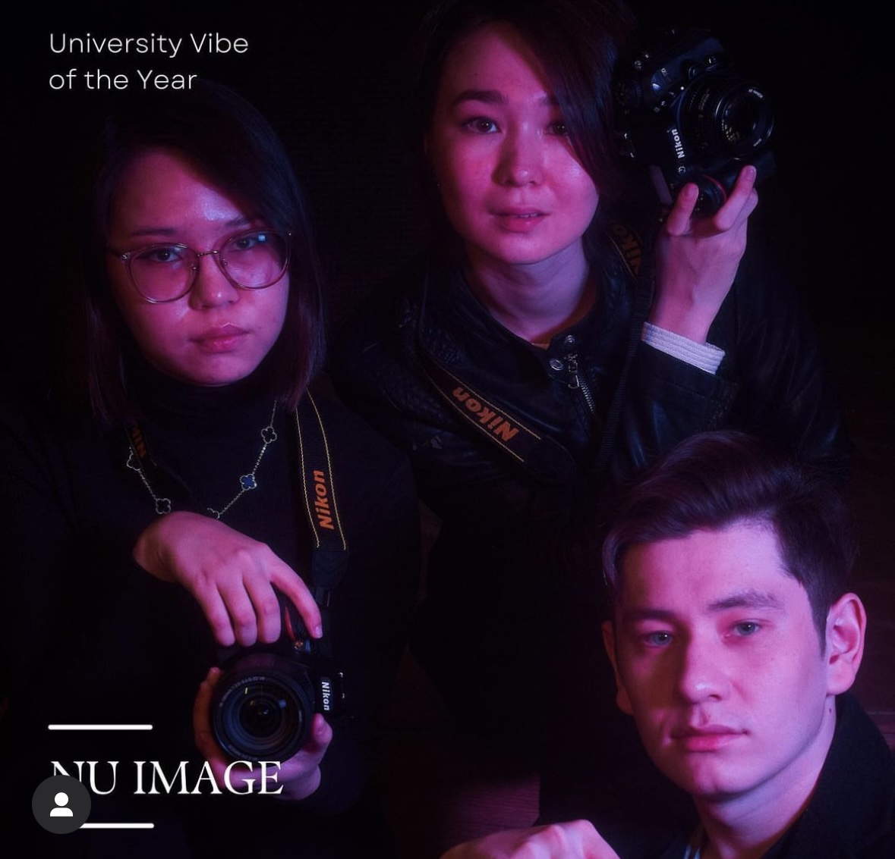
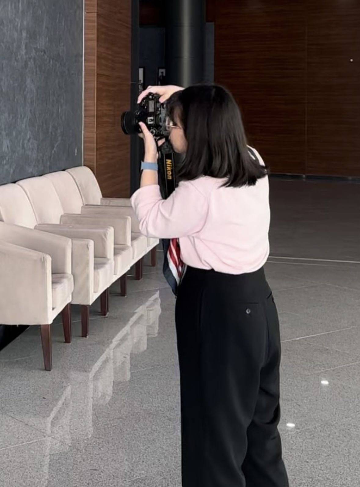
Research Assistant
Multimedia Corpus of Modern Spoken Kazakh
December 2021-Present
- Collect a data of natural occurring Kazakh language
- Transcribe a collected data of natural occurring Kazakh language
- Make an interlinear glossing of a collected data of natural occurring Kazakh language
- Translate a collected data of natural occurring Kazakh language
- Organized an event regarding Corpus Linguistics, which is called LLL-Ed: Corpus Linguistics (11.04.2023), to promote the awareness of people about this particular branch of Linguistics.
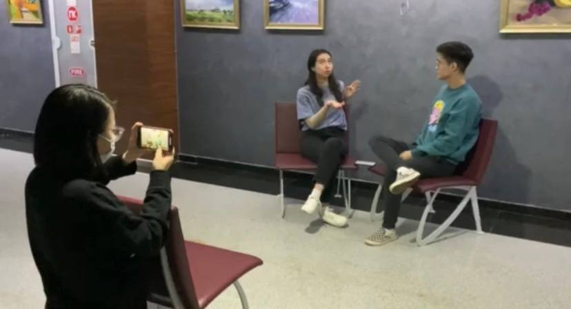
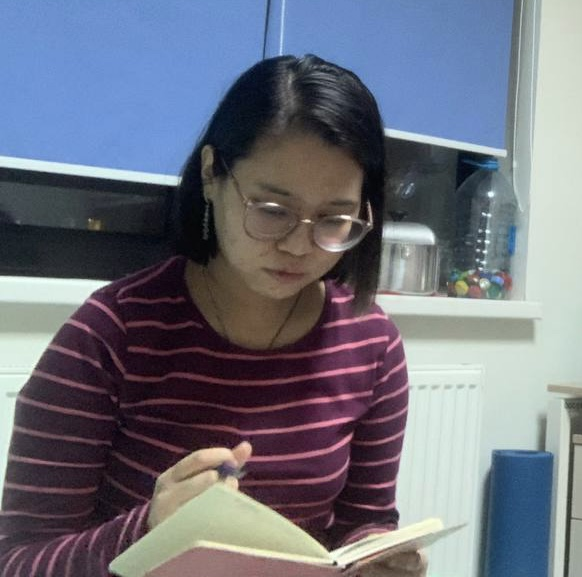
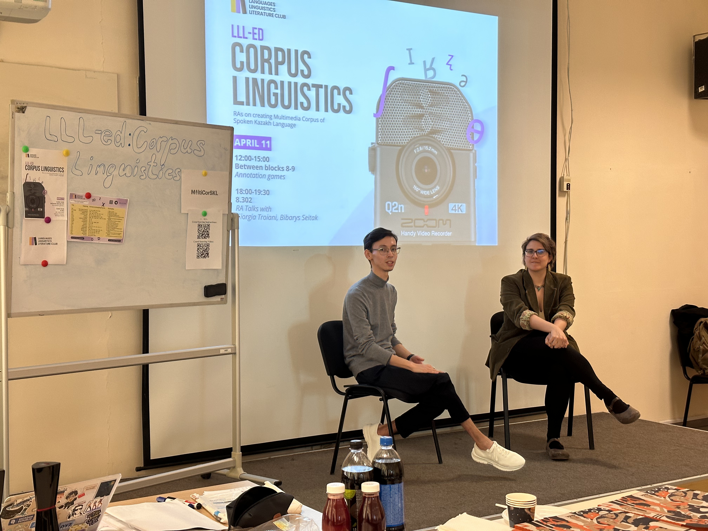
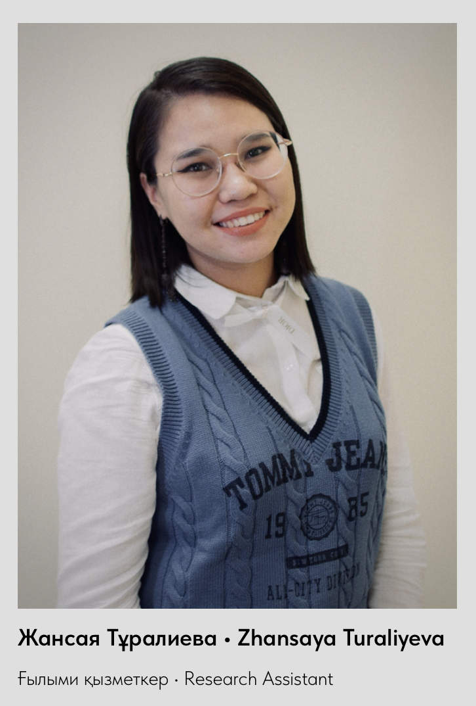
SKILLS
- Conflict resolution
- Teamwork
- Public speech
- Pressure handling
- Research
- Event planning
LANGUAGES
HONOURS AND AWARDS
- Dean's List at Spring 2021 semester
- Dean's List at Fall 2021 semester
- Dean's List at Spring 2022 semester
- Presidential Stipend holder at Fall 2022 semester
- Led “1 Day with NU Student” at @nuedukz official Instagram page
- Nominated for the “Undergraduate Student of the Year” at NU Awards 2023
- Led “Tips from Straight A Student” to Freshman students
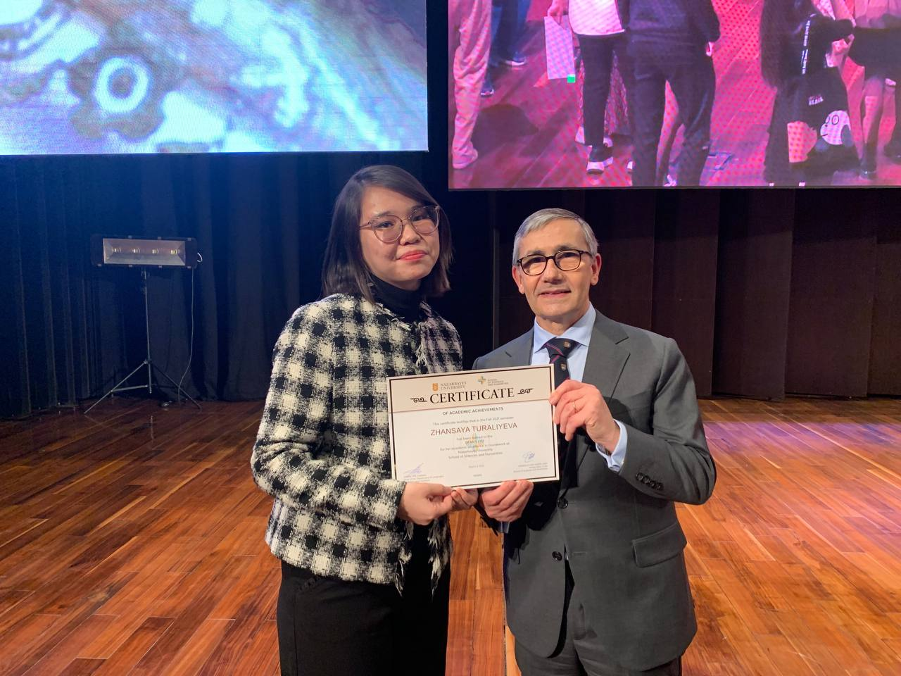
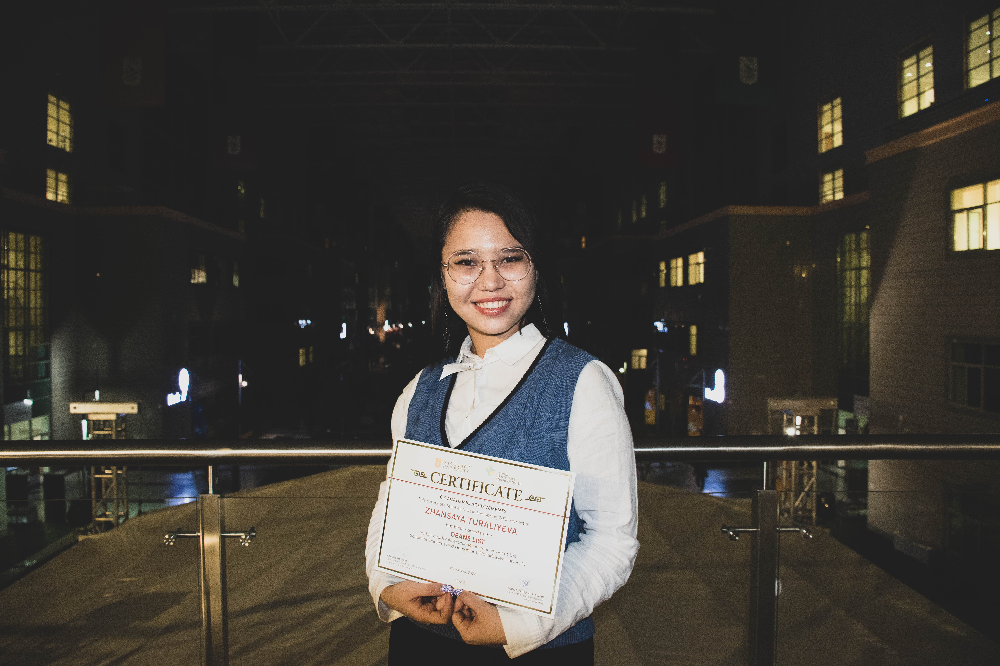
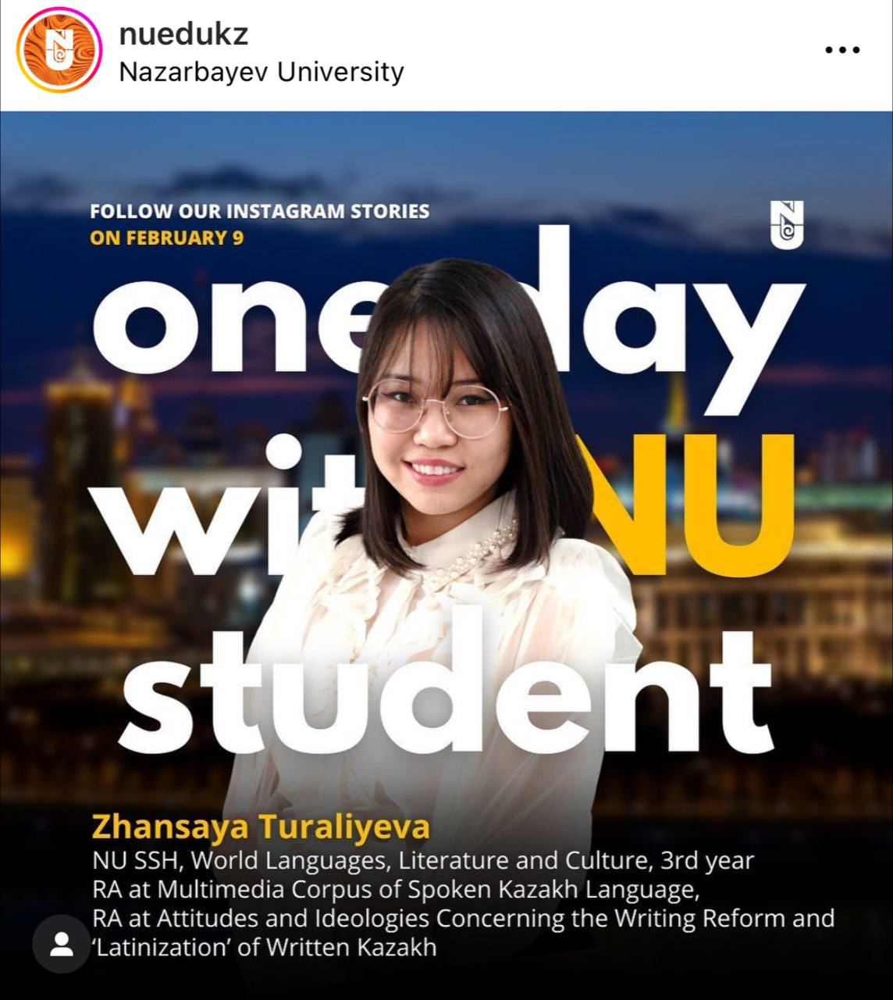